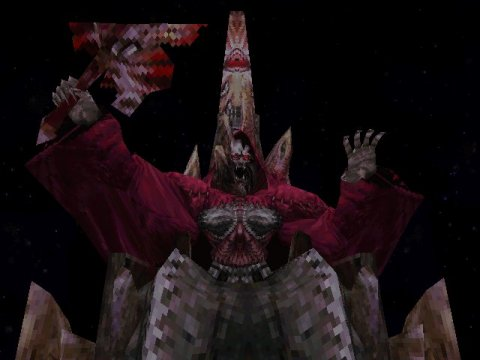

|

|
|
ฺฺBoss
Tantarian
Lv. 41
HP 21,997
MP 1,456
Type : Demon
Weak : Holy
Steal : Ether, Elixer, Silver Fork, Demon's Mail
Note :
Tantarian เป็นหนังสือในห้องสมุดเมือง Alexandria
จะเจอกับ Tantarian ได้เพียงช่วงเดียวเท่านั้นคือ ในช่วงหลังจบการแข่งการ์ดเกมที่
Treno
ในขณะที่ Zidane กำลังตามหา Garnet ที่วิ่งขึ้นไปบนหอคอยเมือง Alexandria
แทนที่จะวิ่งตาม Garnet ไป ให้ไปยังห้องสมุดแทนเพื่อพบกับ Tantarian
สำรวจชั้นหนังสือด้านซ้ายล่าง ซึ่งมีหนังสือเล่มหนึ่งวางอยู่บนชั้นหนังสือ
เมื่อกดสำรวจจะสามารถสู้กับ Tantarian ได้
การต่อสู้กับ Tantarian ค่อนข้างยาก เพราะตัวละครของคุณยังไม่เก่งนัก
อีกทั้งยังต้องทำการเปิดหน้าหนังสืออยู่เรื่อยๆ
ในการเปิดหน้าหนังสือ บางครั้งจะเจอศัตรูที่อยู่ในหนังสือไม่เหมือนกัน
การต่อสู้จะเป็นไปได้อย่างยากลำบาก ควรติดตั้งความสามารถที่ป้องกัน Poison
ไว้ด้วย
Quale
Lv. 76
HP 65,535
MP 3,680
Type : Human
Weak : Thunder
Absorb : Water
Steal : Elixer, Ninja Gear, Glutton's Robe, Robe of Lords
Note :
จะเจอ Quale ได้เมื่อเล่น mini game Frogs Captured ของ Quina และสามารถจับกบได้
99 ตัว
วิธีสู้กับ Quale ไม่ยากนัก หากติดตั้งอุปกรณ์ป้องกันสภาวะผิดปรกติต่างๆ
ไว้
เช่น Confuse, Darkness, Poison
ให้โจมตีด้วยท่าที่สามารถสร้างความเสียหายได้อย่างสม่ำเสมอ
เช่น Zidane ใช้ Thievery, Freya ใช้ Dragon's Chest, Steiner ใช้ Shock
และ มีตัวละครคอยเติม HP ไว้อย่างสม่ำเสมอ ก็จะชนะได้อย่างไม่ยาก
เมื่อชนะ จะได้รับ Gastro Fork อาวุธของ Quina
Hades

Lv. 92
HP 55,535
MP 9,999
Type : Demon/Flying
Weak : Holy
Guard : Earth
Absorb : Shadow
Steal : Reflect Ring, Running Shoes,
Battle Boots, Robe of Lords
Note :
จะเจอกับ Hades ได้ใน Memoria ห้องที่ Quina อยากจะว่ายน้ำ
ให้สำรวจด้านขวาของห้อง กดสำรวจหลายๆ ครั้ง เพราะจะไม่มีสัญลักษณ์ ! โผล่ขึ้นมา
หากสำรวจเจอ จะมีคำถามขึ้นมา หากต้องการสู้ก็ให้ตอบ don't leave
การต่อสู้กับ Hades ให้ติดตั้งอุปกรณ์ป้องกันสภาวะผิดปรกติต่างๆ ไว้
เช่น Confuse, Darkness, Poison, Heat, Freeze
อีกทั้งจำเป็นต้องสวมใส่อุปกรณ์ที่ Absorb หรือ Guard element Shadow ไว้ด้วย
เพราะ Hades สามารถใช้ท่า Doomdays ได้
ให้โจมตีด้วยท่าที่สามารถสร้างความเสียหายได้อย่างสม่ำเสมอ
เช่น Zidane ใช้ Thievery, Freya ใช้ Dragon's Chest, Steiner ใช้ Shock
และ มีตัวละครคอยเติม HP ไว้อย่างสม่ำเสมอ ก็จะชนะได้อย่างไม่ยาก
เมื่อชนะ Hades จะสร้างอาวุธให้เราได้ (เขาจะทำตัวเป็น Synthesis Shop)
ซึ่งมีอุปกรณ์ดีๆ ดังนี้
Robe of Lords 30,000 Gil (White Robe + Black Robe)
Tin Armor 50,000 Gil (Hammer + Ore)
Protect Ring 40,000 Gil (Dark Matter + Rebirth Ring)
Pumice 50,000 Gil (Pumice Piece + Pumice Piece)
Garnet 350 Gil (Ore + Remedy)
Amethyst 200 Gil (Ore + Annoyntment)
Peridot 100 Gil (Ore + Soft)
Sapphire 200 Gil (Ore + Antidote)
Opal 100 (Ore + Potion)
Topaz 100 Gil (Ore + Eye Drops)
Lapis Lazuli 400 Gil (Ore + Dead Pepper)
Pumice Piece 25,000 Gil (Hammer + Pumice)
Save the Queen 50,000 Gil (Javelin + Silver Gloves)
Phoenix Pinion 300 Gil (Phoenix Down + Gysahl Greens)
Ether 500 Gil (Echo Screen + Vaccine)
Ozma
Lv. 99 (???)
HP 55,535
MP 9,999
Type : Flying
Steal : Elixer, Dark Matter
Note :
จะเจอ Ozma ได้บน Chocobo Air Garden
ซึ่งการที่จะขึ้นไปบน Chocobo Air Garden ได้ จำเป็นที่จะต้องทำให้ Chocobo
เป็นสีทองเสียก่อน
โดยการเล่น mini game Chocobo Hot&Cold เพื่อเพิ่มความสามารถให้กับ Chocobo
การต่อสู้กับ Ozma ให้ติดตั้งอุปกรณ์ป้องกันสภาวะผิดปรกติต่างๆ
เช่น Confuse, Darkness, Poison, Heat, Freeze รวมทั้งพวก Auto-Life, Auto-Haste
อีกด้วย
อีกทั้งจำเป็นต้องสวมใส่อุปกรณ์ที่ Absorb หรือ Guard element Shadow ไว้
เพราะ Ozma สามารถใช้ท่า Doomdays ได้
ให้โจมตีด้วยท่าที่สามารถสร้างความเสียหายได้อย่างสม่ำเสมอ
เช่น Zidane ใช้ Thievery, Freya ใช้ Dragon's Chest, Steiner ใช้ Shock
และ มีตัวละครคอยเติม HP ไว้อย่างสม่ำเสมอ
หรือให้ Vivi ใช้ท่า Doomdays โจมตี และเพิ่ม HP
(ในกรณีติดตั้งอุปกรณ์ที่สามารถ Absorb Shadow element)
เมื่อชนะ จะได้รับ Pumice ซึ่งจะทำให้ Garnet สามารถเรียก Ark ออกมาได้
|
|